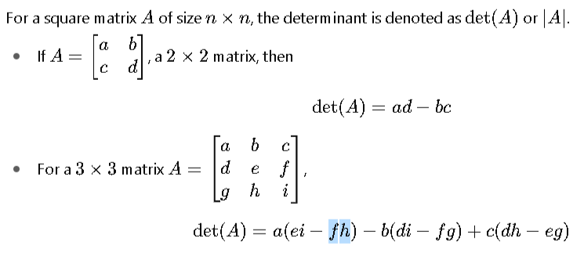
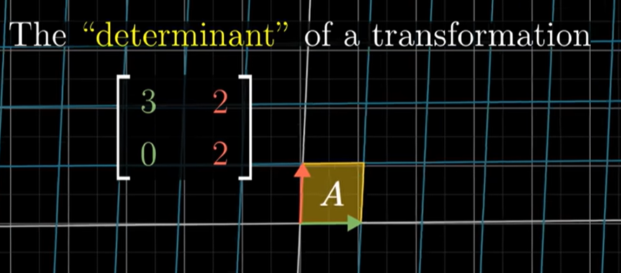
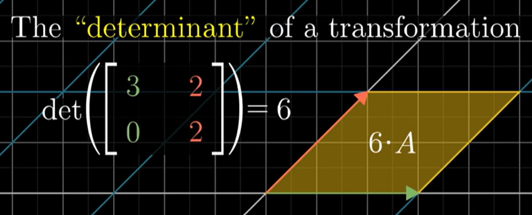
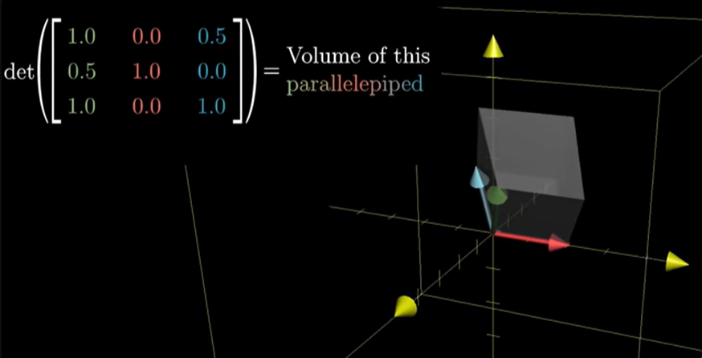
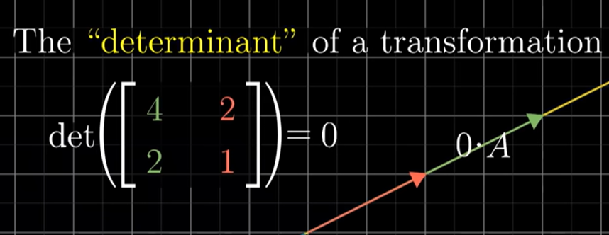
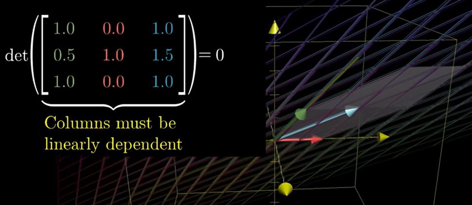
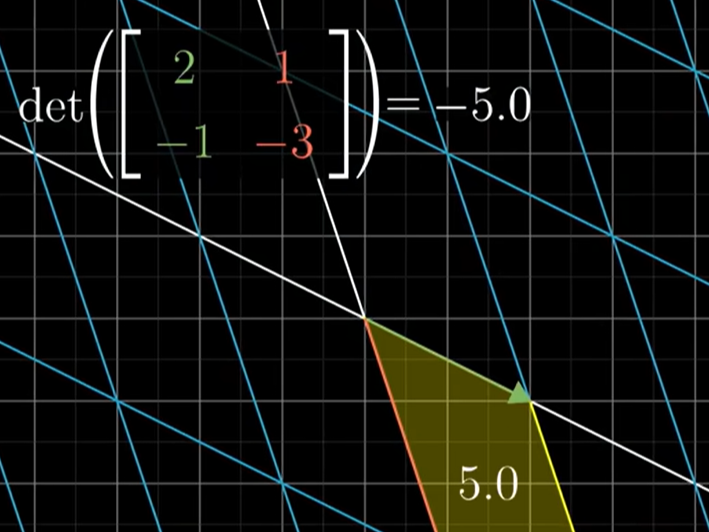

×
Determinant of a Matrix

A determinant is a scalar (a single number) that can be computed from a square matrix (a matrix with the same number of rows and columns). It is a numeric representation of how the area of a matirx changes (space between i-hat, j-hat, k-hat). It looks like an area for 2D space and volume for 3D space. Negative det means it gor inverted, and 0 a line or a dot in 2D (no area) or a 2D shape, line, or a dot in 3D (no volume).





